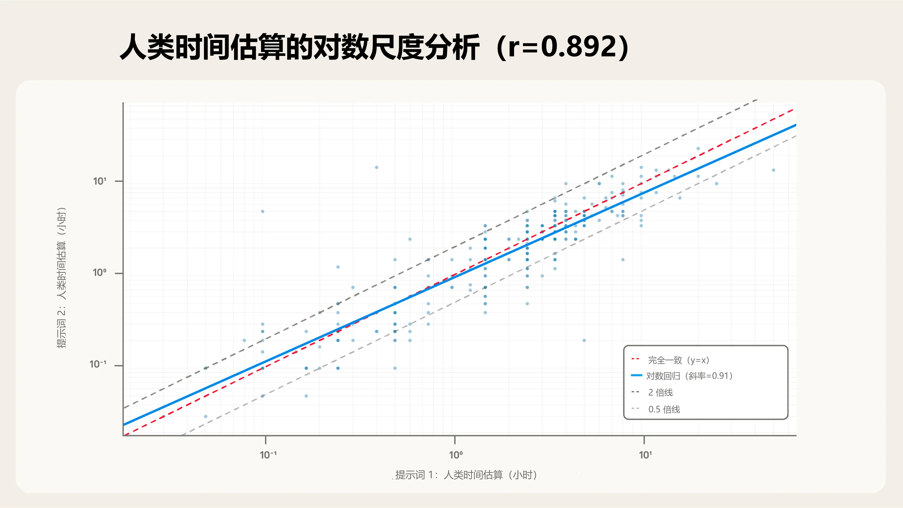
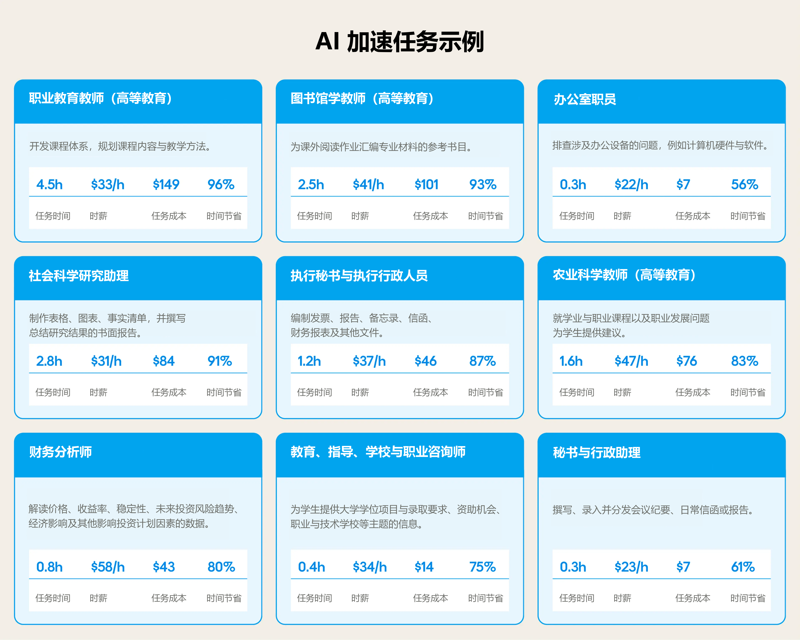
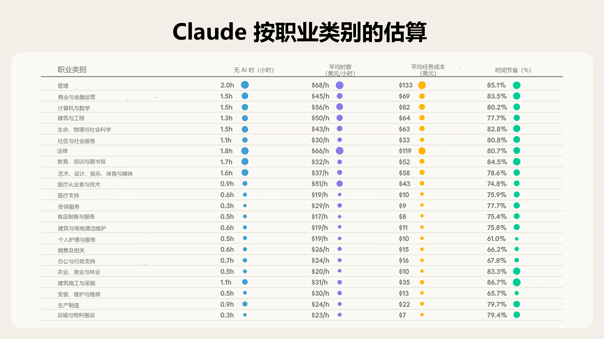
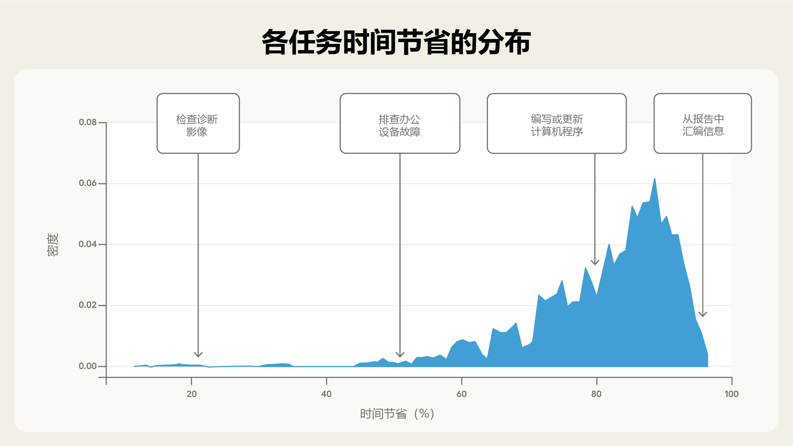
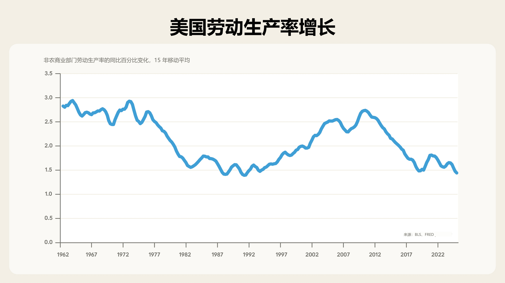
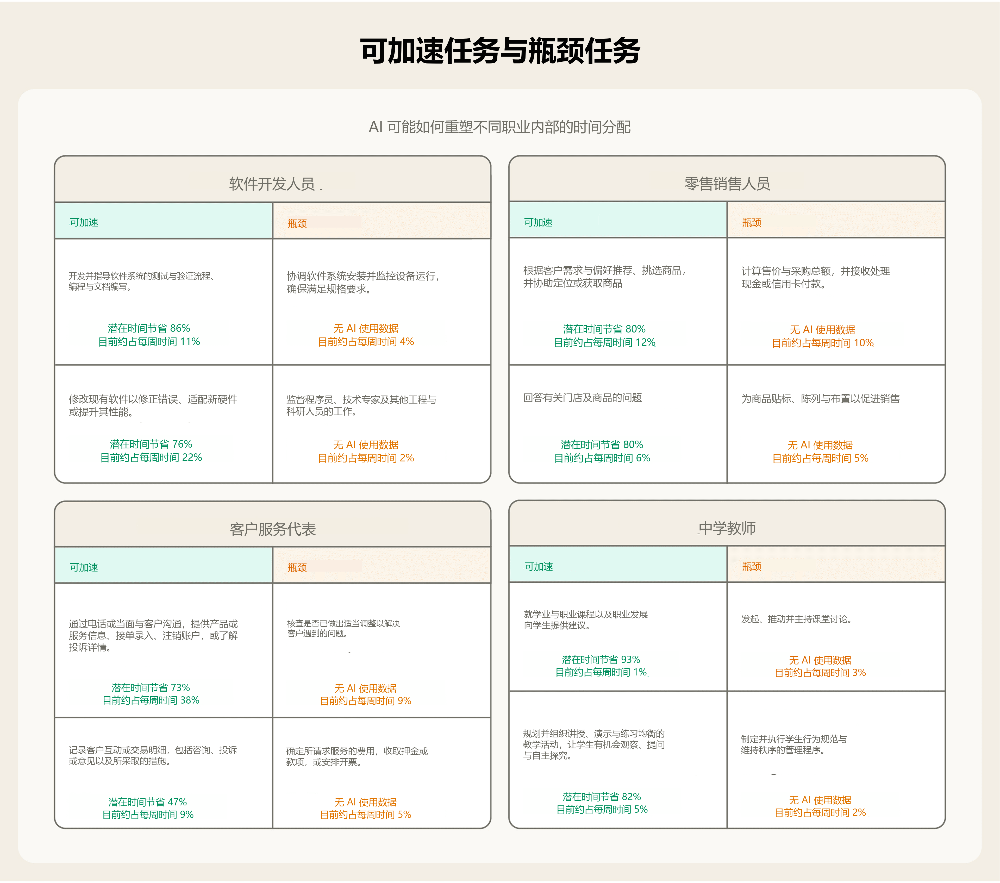

从Claude对话估算AI带来的生产率提升
📖 中文摘要
专业术语注解
生产率：单位时间内创造产出的效率，是经济增长的核心指标隐私保护：在不泄露用户个人信息的前提下分析数据的技术O*NET：美国官方的职业与工作任务分类数据库抽样：从海量数据中随机选取代表性样本进行分析自洽性检验：用不同提问方式验证估算结果是否稳定的方法📄 中文全文
- 分类： 经济研究
- 来源： https://www.anthropic.com/research/estimating-productivity-gains
经济研究
2025 年 11 月 25 日
阅读 PDF 版
概述
与 Claude 的真实对话能告诉我们关于 AI 对劳动生产率影响的什么信息？利用我们保护隐私的分析方法，我们从 Claude.ai 中抽样了十万个真实对话，估算这些对话中的任务在有和没有 AI 帮助的情况下各需要多长时间完成，并研究其对更广泛经济的生产力影响。根据 Claude 的估算，这些任务在没有 AI 帮助的情况下平均大约需要 90 分钟完成，而 Claude 将单个任务的速度提高了约 80%。
将这些估算外推表明，当前一代的 AI 模型可能在未来十年内使美国劳动生产率增长每年提高 1.8%——大约是近年增速的两倍。但这并不是对未来的预测，因为我们没有考虑采用率，也没有考虑更强大的 AI 系统会带来的更大生产力效应。
我们的分析存在局限。最值得注意的是，我们无法计入人类在 Claude 对话之外花费在任务上的额外时间，包括验证 Claude 工作的质量或准确性。但随着 AI 模型在时间估算方面变得更好，我们认为本研究报告中的方法可能越来越有助于理解 AI 如何塑造真实的工作。
以下是我们的结果更详细的摘要：
* 在十万个真实世界对话中，Claude 估计 AI 将任务完成时间减少了 80%。 我们使用 Claude 来评估匿名化的 Claude.ai 记录，以估算 AI 的生产力影响。根据 Claude 的估算，人们通常将 AI 用于复杂的任务，这些任务平均需要人们 1.4 小时才能完成。通过将任务与 ONET 职业和 BLS 工资数据匹配，我们估计这些任务原本需要 55 美元的人力成本。
* 任务的预计规模、成本和节省时间因职业而异。 根据 Claude 的估算，人们将 Claude 用于原本需要近两小时的法律和管理任务，但用于只需要 30 分钟的食品准备任务。我们发现医疗保健辅助任务可以快 90% 完成，而硬件问题的节省时间为 56%。然而，这没有计入人类可能在 Claude.ai 对话_之外_花在这些任务上的时间，因此我们认为这些估算至少在一定程度上可能高估了当前的生产力效应。
* 将这些结果外推到经济层面，当前一代的 AI 模型可能在未来十年内使美国年度劳动生产率增长提高 1.8%。这将使美国自 2019 年以来每年的增长翻一番， 并使我们的估算处于近期估算的上端。 在给定 Claude 对任务层面效率增益估算的前提下，我们使用标准方法计算出美国劳动生产率未来十年隐含的年增长率提高 1.8%。然而，这一估算没有考虑 AI 模型未来的改进（或对现有技术更复杂的使用），而这些可能会显著放大 AI 的经济影响。
* 随着 AI 加速某些任务，其他任务可能成为瓶颈：我们看到某些任务获得了巨大的加速，而另一些任务（即使在同一职业群体内）的加速则小得多。在 AI 作用不大的地方，这些任务可能成为瓶颈，从而对增长构成制约。
这为我们提供了一个新的视角来理解 AI 的经济影响如何随时间演变，我们将作为 经济指数（Economic Index）的一部分持续追踪：* 基于真实世界的 Claude 对话来计算这些估算，给了我们一个理解 AI 生产力的新视角。这补充了其他方法，例如窄领域中的实验室研究，或提供更粗略洞见的政府统计。我们将追踪这些估算随时间的变化，以便在能力和采用不断推进的过程中，获得对这些问题的动态认识。
 我们方法的概览和一些主要结果。关于我们如何验证 Claude 的估算、我们所做的假设以及分析的局限，请参见下文。
我们方法的概览和一些主要结果。关于我们如何验证 Claude 的估算、我们所做的假设以及分析的局限，请参见下文。
引言
作为 Anthropic 经济指数的一部分，我们记录了人们如何在不同任务、行业和地点使用 Claude。我们捕捉到了使用的广度——人们如何将 Claude 用于法律、科学和编程任务——但没有捕捉到深度。人们使用 Claude 处理的任务有多重要，Claude 为他们节省了多少时间？ 当前版本的经济指数无法捕捉这种任务内异质性——例如，它无法区分需要五分钟的报告写作任务和需要五天的报告写作任务，也无法区分需要一个下午的财务建模任务和需要几周的财务建模任务。这使得评估 AI 的经济效应变得困难：一位软件开发人员可能一天内用 Claude 写十个拉取请求（pull request），但如果其中九个是次要的文档更新，而一个是关键的基础设施变更，那么仅仅计算用 Claude 完成的任务数量就偏离了重点。 不仅如此，随着模型能力的提升，我们想了解它们是否在从事更高价值的工作。要理解 AI 如何重塑工作和生产力，我们不仅需要知道 Claude 处理了_哪些_任务，还需要知道这些任务和节省的时间有多_大_。 一些团队已经开始进行随机对照试验，以衡量窄领域中的生产力增益，包括软件工程任务、写作和客户服务。METR 关于衡量 AI 完成长任务能力的工作已经证明，AI 系统能够独立应对扩展的多步骤挑战。但这些评估考虑的是一组狭窄的问题，而非广泛的现实世界使用。要评估 AI 对经济的_总体_影响，我们需要一种能够分析数百或数千个现实世界 AI 应用的方法。 本报告向这一目标迈出了第一步。它使用 Claude 来估算人类完成 Claude 处理的任务需要多少时间，并将其与 Claude 和人类一起完成所花的时间进行比较，从而计算出 AI 节省了多少时间。虽然 AI 模型缺乏关于用户专业知识、工作流程和约束的背景信息，但我们发现，对于一个软件工程任务数据集，模型估算的时间相对于人类估算的完成时间和实际计时结果，都显示出有前景的准确性。 在下文中，我们介绍估算任务层面时间节省的方法论，对照真实数据验证我们的方法，然后使用这些估算来评估哪些任务和职业从 AI 中获得了最大的生产力增益。接着，我们探讨我们的任务层面估算对 AI 开始在整个经济中被采用时总体生产力的意义。
估算任务时长和节省的时间
利用我们的隐私保护分析系统，我们分析了来自 Claude.ai（Free、Pro 和 Max 层级）的 100,000 份对话记录，以衡量 Claude 处理的任务的时长和节省的时间。我们为每个任务生成了两个核心估算： * 没有 AI 的时间估算：人类专业人士在没有 AI 帮助的情况下完成任务所需的工时 * 有 AI 的时间估算：在 AI 帮助下完成任务所花的时间 我们使用 Claude 为每个对话生成这些估算。遵循我们的经济指数方法论，我们随后通过对每个任务的时间估算取中位数，将这些单独的聊天对话聚合成 O*NET 分类体系中的任务。这使我们能够探索这些时间估算如何随经济中的任务和职业而变化。分类提示词见附录。 分析真实世界的记录使我们能够计入_任务内变异_。例如，即使_设计制造设备_任务的总体份额保持不变，记录层面的信息也能让我们看到人们是否在用 AI 处理更复杂、时间跨度更长的项目（或获得更大的时间节省）。我们的经济指数将追踪这些估算随时间的变化，并共享汇总数据集，供研究人员用来做出自己的预测和结论。
验证
估算任务时长对人类来说是出了名的困难。AI 模型的任务更加困难，因为它们缺乏关于任务更广泛背景的关键信息（尽管随着记忆和外部集成等功能变得更加全面，我们预计这种背景会随着时间增加）。为了评估 Claude 的估算是否具有参考价值，我们进行了两项验证分析。 自一致性测试： 首先，我们评估 Claude 在不同对话样本或提示词变体之间是否产生稳定的任务时长估算。 我们创建了多种提示词变体——例如，询问“具有适当技能的员工”与“熟练的专业人士”——以评估估算对提示词措辞方式的敏感程度。我们用每个变体分析了 1,800 个对话（用户已同意与我们分享这些对话），并计算了各提示词变体之间的相关性。结果显示强烈的一致性，各变体之间的对数尺度相关性为 r =0.89–0.93。

Claude 估算的人类完成时间在各提示词变体之间显示出高相关性。 提示词 1 要求 Claude 估算一位“具有适当技能的员工”完成任务所需的时间，提示词 2 询问一位“在相关领域胜任”的“人类工作者”。两个提示词显示 0.89 的对数尺度相关性，表明高度一致。分析基于 Claude.ai 中用户同意为研究目的与我们分享的记录。 外部基准测试： 如果模型的预测与现实不符，自一致性就意义不大。为了检验这一点，我们用一个来自开源仓库 JIRA 工单、包含数千个真实世界软件开发任务的数据集测试了 Claude 的时间估算能力，该数据集既有开发者的估算，也有实际记录的完成时间。 这对 Claude 来说是一项极具挑战性的任务，因为 Claude 只收到 JIRA 工单的标题和描述，而人类开发者拥有代码库和工单的完整背景，并且知道类似任务需要多长时间才能完成。在该基准的 1000 个任务子集上： * 人类开发者自身与实际时间的 Spearman 相关性达到 ρ=0.50，对数值的 Pearson 相关性达到 r_log=0.67，表明中等强度的相关性（两个值都是越高越好）。 * Claude Sonnet 4.5 达到 ρ=0.44 和 r_log=0.46 * 在提示词中给出十个任务及其真实时长示例的 Claude Sonnet 4.5 显示 ρ=0.39 更差，但 r_log 提高到 0.48 这一分析表明，Claude 的估算提供了_方向性_信息，仅略逊于软件开发人员自己的估算。然而，我们观察到 Claude 的估算比人类更压缩——对较短的任务预测相对较长的时间，反之亦然——并且总体上更容易高估。这表明任务之间的实际时长差异可能比我们报告的更大，而且实际任务时长可能略短。总体而言，这些发现表明，至少在这个领域，模型预测与现实世界结果具有有意义的相关性，使其可用于比较一个任务与另一个任务，或追踪随时间的变化。我们还观察到 Claude Sonnet 4.5 的相关性高于 Claude Sonnet 4，表明这些估算可能随着模型能力的提升而继续改善。 软件工程任务实际花费时间与开发者和 Claude 估算的相关性。左图：与开发者初始时间估算的相关性（对照最终的时间记录结果）。开发者熟悉完整代码库，理解请求背后的全部背景，也知道类似任务花费了多长时间。中图：仅给定 JIRA 工单的标题和描述时，与 Claude Sonnet 4.5 估算的相关性。右图：在提示词中给出 10 个示例用于校准后，与 Claude Sonnet 4.5 估算的相关性。总体而言，Claude 的估算与开发者的方向性相关性相似：Spearman ρ =0.44，而开发者是 ρ =0.50，尽管 Claude 显著高估短任务、低估长任务。坐标轴为对数（以 10 为底）刻度。误差条为每箱的 95% 置信区间。
软件工程任务实际花费时间与开发者和 Claude 估算的相关性。左图：与开发者初始时间估算的相关性（对照最终的时间记录结果）。开发者熟悉完整代码库，理解请求背后的全部背景，也知道类似任务花费了多长时间。中图：仅给定 JIRA 工单的标题和描述时，与 Claude Sonnet 4.5 估算的相关性。右图：在提示词中给出 10 个示例用于校准后，与 Claude Sonnet 4.5 估算的相关性。总体而言，Claude 的估算与开发者的方向性相关性相似：Spearman ρ =0.44，而开发者是 ρ =0.50，尽管 Claude 显著高估短任务、低估长任务。坐标轴为对数（以 10 为底）刻度。误差条为每箱的 95% 置信区间。
结果
我们首先使用上述方法估算任务层面的节省，然后将这些聚合成经济范围效应的估算。
任务层面的节省

Claude 估算的任务时间、职业的平均时薪、隐含的任务成本，以及九个不同任务的时间节省。任务时间是通过让 Claude 预测一位专业人士在没有 AI 帮助的情况下执行任务所需的时间来估算的。时薪来自 2024 年 5 月的职业就业与工资统计（Occupational Employment and Wage Statistics，OEWS）数据。任务成本由任务时间乘以时薪计算得出。时间节省通过估算人类完成任务所花时间并计算 1 - 有AI时间 / 无AI时间 得出。示例任务展示了不同程度的时间节省
查看职业内的单个任务，可以为我们提供关于 AI 可能在哪些方面以及如何节省时间的具体例子。在最极端的案例中，我们看到用户用仅 11 分钟完成了 Claude 认为需要 4.5 小时的课程开发任务。根据教师的平均时薪，这类任务的隐含劳动力成本为 115 美元。 人们还用 AI 节省了 87% 编写发票、备忘录和其他文档（至少是 Claude 被要求处理的那类文档）所需的时间。最后，AI 在财务分析师任务（如解读财务数据，此类任务原本需要 31 美元工资成本）上节省了 80% 的时间。
任务时长在不同职业之间差异巨大
人类时间估算显示，Claude 处理的任务根据职业不同，时长差异很大。在下图中，我们展示了使用 Claude 的任务子集中每个职业类别的平均值¹。使用 Claude 的平均管理任务（例如选择投资）估计需要人类 2.0 小时完成，其次是法律（1.8 小时）、教育（1.7）和艺术/媒体任务（1.6）。在光谱的另一端，食品准备任务（例如规划菜单项目或为其定价）、安装/维护和运输任务平均只需 0.3-0.5 小时，表明这些是更受限的任务，或等待时间较少的任务。鉴于 Claude 的时间估算往往低估长任务、高估短任务，这些差异在实践中可能甚至更大。

根据 Claude 对 SOC 主要组的时间估算得出的各种数据。人类时间估算在不同职业之间差异显著——人们将 Claude 用于管理类和法律类任务，这些任务在没有辅助的情况下估计需要人类约 2 小时，而医疗保健支持和食品准备任务平均约半小时。职业类别的平均时薪来自 OEWS 2024 数据。平均任务成本通过将每个职业的时薪乘以其任务时间中位数，并按各任务在样本中的出现率加权计算平均值得出。时间节省通过 1 - 有AI时间 / 无AI时间 计算。 成本估算放大了 AI 影响的这种差异：时间估算最长的任务往往也是劳动力成本最高的任务。我们通过将每个任务的中位时间乘以 OEWS 2024 年 5 月数据中相关职业的平均工资来计算这些成本估算。平均管理任务对专业人士来说将花费 133 美元，法律任务为 119 美元，与食品准备和服务相关的任务为 8 美元。商业和金融任务平均为 69 美元，而计算机和数学任务平均为 82 美元。 在我们观察的所有任务中，我们估计 Claude 处理的工作在每次对话中，聘请专家完成这些工作所需的专业劳动力成本中位数为 54 美元。当然，对于许多任务，当前模型的实际表现可能不如人类专家，尽管最近的研究表明差距正在缩小。 在主要职业群体中，我们观察到样本中任务/职业的平均时薪与 Claude 被要求处理任务的人类等效时长之间存在正相关。例如，管理和法律职业类别在平均时薪方面排在分类的顶端——这与 Claude 在复杂知识工作上的优势相一致。 职业类别的平均时薪与样本中 Claude 估算的平均任务时长之间的相关性。在我们的样本中，高工资职业类别（如管理和法律）的任务使用更复杂（r =0.8）。
职业类别的平均时薪与样本中 Claude 估算的平均任务时长之间的相关性。在我们的样本中，高工资职业类别（如管理和法律）的任务使用更复杂（r =0.8）。
时间节省在不同职业之间高度不均
我们的人类时间和成本估算捕捉了人们用 AI 处理任务的_规模_。但节省的_时间_——Claude 对用 AI 工作能快多少的估算——反映了使用 AI 处理这些任务可能带来的生产力增益。 中位数对话经历了约 84% 的估算时间节省，尽管我们看到任务和类别之间存在相当大的差异。例如，检查诊断影像的任务只显示 20% 的时间节省，这可能是因为这已经是一项专家在没有 AI 帮助的情况下可以快速完成的任务。相比之下，从报告中汇编信息的任务约有 95% 的时间节省，这可能是因为 AI 系统阅读、提取和引用信息的速度远快于人类。总体而言，按任务划分的节省时间分布集中在 50-95% 范围内，在 80-90% 之间达到峰值。 这些巨大的时间节省与 Claude 阅读和写作速度远超人类的能力一致。然而，我们的方法没有考虑人们为将 Claude 的输出精炼到最终状态而需要做的额外工作，也没有考虑他们是否会在多个会话中继续迭代工作成果——这两者都会导致更小的时间节省。过去的随机对照试验通常发现较小的时间节省，包括不同应用中的56%、40%、26%、14%甚至负值——这可能是由于这些效应，也可能是因为这些研究考察的是较早几代的模型。

样本中 O*NET 任务时间节省的密度图。我们看到 Claude 估算的时间节省在我们的样本中是不均匀的，大多数落在 50% 到 95% 之间。总体中位数节省为 81%。时间节省通过 1 - 有AI时间 / 无AI时间 计算。我们的估算没有考虑在聊天窗口之外精炼 Claude 输出所花的时间。从任务层面的效率增益到经济范围的生产力效应
上述估算捕捉了任务层面的 AI 驱动的生产力增益。为了理解宏观层面的影响，本节对这些增益如何在整个经济中聚合进行建模，假设它们按照 Claude 的估算实现。
方法论
为了估算经济范围的生产力效应，我们使用 Hulten 定理（Hulten's theorem），这是一种标准方法，使我们能够将任务层面的效率增益聚合到更广泛的美国经济²。与 Acemoglu (2024) 的“基线”方法一样，我们将隐含的劳动生产率增长建模为任务层面生产力增益的加权平均——这一建模选择隐含地假设，与 AI 采用相关的全要素生产率（TFP）提高将导致资本投资增加。在这个框架中，隐含的 TFP 增长等于劳动生产率增益乘以劳动收入份额³。
任务构成：对于每个职业，我们从 ONET 获得工作任务列表。然后我们使用 Claude 来估算工人的时间花在每项任务上的比例。例如，Claude 估计程序员将 23% 的时间用于编写和维护代码，15% 用于分析和重写程序，以及较小的比例用于测试、文档和会议。
任务层面的生产力改进：在上一节中，我们提供了可用于计算每个任务在 AI 帮助下完成速度快多少的估算。我们取无 AI 时间与_有_ AI 时间之间的对数差，以生成生产力改进值，并保守地将样本中未观察到的任务赋为零改进。
经济范围估算：我们用两个因素对每个任务的隐含生产力增益按经济重要性加权：(i) Claude 估算的职业花在该任务上的时间比例（如上所述），以及 (ii) 该职业在美国总工资账单中的份额（该职业类别的就业人数乘以平均工资，再除以所有职业的总工资账单）。对于总工资账单，我们使用 2024 年 5 月的 OEWS 数据。这种方法隐含地假设 Claude 产生的时间估算代表了每个任务所有实例的可靠平均值，并且 Claude 或类似的 AI 系统将在整个美国经济中被采用。
 美国经济范围劳动生产率影响：十大职业。* 总体而言，Claude 的估算意味着，假设当前 AI 系统被普遍采用来处理我们观察到的所有任务，美国劳动生产率将实现 1.8% 的年化增长（虚线），主要由软件、管理、营销和客户服务任务驱动。这对应于隐含的 1.08% 年化 TFP 增长。平均 ln(时间估算比率) 表示每个职业所有任务的时间加权生产力增益，其中 时间估算比率 = 有AI时间 / 无AI时间。劳动力统计来自 OEWS 2024 数据。
美国经济范围劳动生产率影响：十大职业。* 总体而言，Claude 的估算意味着，假设当前 AI 系统被普遍采用来处理我们观察到的所有任务，美国劳动生产率将实现 1.8% 的年化增长（虚线），主要由软件、管理、营销和客户服务任务驱动。这对应于隐含的 1.08% 年化 TFP 增长。平均 ln(时间估算比率) 表示每个职业所有任务的时间加权生产力增益，其中 时间估算比率 = 有AI时间 / 无AI时间。劳动力统计来自 OEWS 2024 数据。
发现
假设 AI 需要 10 年才能在美国经济中实现普遍采用——并使用当前模型——我们计算出 Claude 的估算意味着美国劳动生产率每年增长 1.8%。这将使当前长期增长率几乎翻倍，后者自 1947 年以来平均每年 2.1%，自 2019 年以来为 1.8%。假设劳动占全要素生产率的份额为 0.64，这意味全要素生产率每年总体增长 1.1%⁵。鉴于自 21 世纪初以来 TFP 增长往往低于 1%，这些估算表明，即使广泛部署当前的 AI 系统也可能使增长翻倍：达到 1990 年代末以及 1960 年代和 1970 年代的速率⁵。 任务层面效率增益所隐含的总体劳动生产率增长估算，处于近期关于 AI 对生产力潜在影响的估算范围内，尽管它位于上端（Filippucci, Gal, and Schief, 2024）。 重要的是，这一推演假设 AI 能力（以及人类使用 AI 的有效性）在未来 10 年内与我们抽样时保持不变。然而，这似乎不太可能成立：我们认为 AI 将在未来几年继续快速改进。 因此，这一估算应被视为一项基于_当前使用模式_探索可能发生什么的推演，而不是对实际最可能发生的生产力影响的预测。正如我们在其他工作中写到的，我们仍然对 AI 造成重大劳动力市场干扰的可能性保持高度警觉，这种干扰可能伴随着 AI 带来的更大生产力增长。随着模型的进步，这可以代表 AI 生产力效应的一个近似下限，尽管我们的估算没有考虑采用的不均衡性，这可能会在短期内降低现实世界的生产力增益。

非农商业部门的劳动生产率增长。图表显示了劳动生产率同比百分比变化的五年移动平均值。我们看到从 1960 年代的近 3% 总体下降到过去几年的约 1.5%。 反映某些任务和职业在我们的数据中出现的频率远高于其他任务和职业这一事实，我们在职业对劳动生产率的贡献中也观察到类似现象。软件开发人员对可归因于 AI 的总体劳动生产率增益的贡献最大（19%）。总经理和运营经理（约 6%）、市场研究分析师和营销专家（5%）、客户服务代表（4%）和中学教师（3%）组成了前五名。 相比之下，餐饮、医疗服务、建筑和零售对总体生产力效应的贡献要小得多。这主要是因为它们的任务很少出现在我们的数据中——很大程度上是因为这些职业在我们的样本中相关的任务很少。AI 可能如何改变工人分配时间的方式？
如果工人能够用 AI 加速其职业任务中的一部分，那么 AI 加速较小的任务可能会在这些职业的工作中占据更大、因而更重要的份额。例如，AI 可能帮助房屋检查员准备报告，但如果检查员仍然需要花同样多的时间亲自前往房产进行现场检查，这可能使检查成为整个工作中更大的部分。 下图以几个职业为例说明了这一点。对于软件开发人员，AI 加速了软件开发、测试、文档编写和数据处理的过程。但我们目前没有看到 AI 在协调系统安装或监督其他技术人员或工程师工作方面的有意义使用。对于教师，我们看到 AI 协助课程和活动规划，但不协助赞助课外俱乐部或维持课堂纪律。 从增长的角度来看，这些观察与 Aghion, Jones, and Jones 最近的一个观察很好地吻合：“增长可能不是受我们擅长什么的限制，而是受那些必不可少却又难以改进之事的限制。”

四个不同的职业以及显示出巨大潜在时间节省的“加速”任务，以及未出现在我们样本中的潜在“瓶颈”任务。例如，软件工程师在开发和调试软件方面看到巨大的估算时间节省，但在监督程序员方面则没有。每周时间比例由 Claude 估算（见前一节）。局限
我们的方法存在几个我们认为值得就该主题进一步研究的局限： * Claude 的预测并不完美，而且我们缺乏对 Claude 时间估算的现实世界验证：AI 系统是不完美的预测器，无法看到用户结束与模型互动之后发生的活动。虽然我们预计这些估算会随着模型能力而改进，但使用模型估算引入了显著的噪声来源。虽然我们的估算表明模型在估算任务时间方面正在接近人类表现，而人类自身也远非完美，但我们缺乏现实世界数据来验证 Claude 提供的估算。 * 任务分类体系局限：真实工作比 ONET 任务列表更复杂，我们为每个任务估算的时间分配只是近似值。工作的许多重要方面——隐性知识、人际关系、不确定性下的判断——不会出现在这些正式的任务描述中，而且任务_之间_的联系可能对生产力的影响与单独这些任务的时间节省一样大，甚至更大。虽然我们对单个任务显示了巨大的预计时间节省，但一项最近的随机对照试验研究端到端软件功能时并未看到 AI 带来的时间节省。 * 结构性假设：在我们上面的计算中，我们比较了专业人士在没有 AI 的情况下完成给定任务所需的时间与有 AI 时所需的时间。但这可能_低估_生产力增益——因为雇佣员工和传达背景需要额外资源（这是我们没有计入的）——也可能高估，如果 AI 的工作质量比人类差的话。 * 组织重构：从历史上看，单个企业最大的生产力增益来自于重组业务运营以采用新技术。我们的模型可以帮助预测这种重构的_效应_，但无法预测公司可能决定如何重构，或这个过程可能有多快。 * 创新的作用：技术创新是经济增长的引擎。我们的模型没有捕捉 AI 系统如何加速甚至自动化科学过程，也没有捕捉这对生产力、增长和工作结构的影响。 * 数据有限*：我们的数据集仅来自 Claude.ai 对话。这个样本不能代表 AI 用途的完整谱系，而且可能存在某种选择效应，即人们使用 Claude 的任务实例是他们认为 Claude 最有用的那些。此外，由于样本量有限，我们可能遗漏了一些不太常见的 AI 任务。 我们在这里开发的测量基础设施能够在大规模上持续追踪 AI 对节省时间的影响。随着模型的改进和更好的方法解决这些局限，我们可以重新估算这些节省的时间，并确定这些能力改进如何转化为更广泛的经济影响。我们期待在未来数月和数年中追踪这些变化。
结论
Claude 处理的任务复杂度差异巨大——从只需要几分钟的简单食品准备问题，到需要数小时的复杂法律和管理任务。但这些工作的总体效应是什么？ 根据 Claude 对每个任务的时间估算（并假设未来 10 年普遍采用），我们发现使用_当前_模型意味着美国劳动生产率每年可能增长 1.8%——这是近期劳动生产率增长速度的两倍。基于当前的 AI 使用情况，这些增益将集中在技术、教育和专业服务领域，而零售、餐饮和运输行业的影响微乎其微。随着模型能力、产品和采用继续发展，我们将作为经济指数的一部分持续追踪这些变化。 这些生产力增益来自让现有任务更快完成。但从历史上看，变革性的生产力改进——无论是来自电气化、计算还是互联网——都不是来自加速旧任务，而是来自从根本上重组生产。在这样的未来中，AI 不仅使功能实现更快，公司还会重组会议和代码审查，以更快地验证和交付这些功能，无论是否使用 AI 或通过其他方式。 我们的框架可以用来帮助估算这种重构的效应，但无法预测会发生哪些变化，或变化有多快。未来工作的一个重要方向是理解这个问题——更好地理解企业何时以及如何围绕新兴的 AI 能力重组自己。答案将决定 AI 何时从提供显著但有限的生产力提升，跃升为代表那种历史上定义了技术革命的结构性转型。
BibTeX
如果你想引用这篇文章，可以使用以下 BibTeX 键：
@online{tamkinmccrory2025productivity,
author = {Alex Tamkin and Peter McCrory},
title = {Estimating AI productivity gains from Claude conversations},
date = {2025-11-05},
year = {2025},
url = {https://www.anthropic.com/research/estimating-productivity-gains},
}
附录
将 Claude 的估算与其他估算进行比较
 AI 在未来 10 年期限内预计带来的年度劳动生产率增长提升。图转载自 Filippucci, Gal, and Schief, 2024。虚线为 1.8%，来自 Claude 的估算。
AI 在未来 10 年期限内预计带来的年度劳动生产率增长提升。图转载自 Filippucci, Gal, and Schief, 2024。虚线为 1.8%，来自 Claude 的估算。
我们用于时间估算的提示词
人类时间估算提示词
Human: Consider the following conversation:
<conversation>
{{TRANSCRIPT}}
</conversation>
Estimate how many hours a competent professional would need to complete the tasks done by the Assistant.
Assume they have:
- The necessary domain knowledge and skills
- All relevant context and background information
- Access to required tools and resources
Before providing your final answer, use <thinking> tags to break down your reasoning process:
<thinking>
2-5 sentences of reasoning estimating how many hours would be needed to complete the tasks.
</thinking>
Provide your output in the following format:
<answer>A number representing hours (can use decimals like 0.5 for shorter tasks)</answer>
Assistant: <thinking>
互动时间估算提示词
Human: Consider the following conversation:
<conversation>
{{TRANSCRIPT}}
</conversation>
Estimate how many minutes the user spent completing the tasks in the prompt with the model.
Consider:
- Number and complexity of human messages
- Time reading Claude's responses
- Time thinking and formulating questions
- Time reviewing outputs and iterating
- Realistic typing/reading speeds
- Time implementing suggestions or running code outside of the converesation (only if directly relevant to the tasks)
Before providing your final answer, use <thinking> tags to break down your reasoning process:
<thinking>
2-5 sentences of reasoning about how many minutes the user spent.
</thinking>
Provide your output in the following format:
<answer>A number representing minutes</answer>
Assistant: <thinking>
软件开发时间估算提示词
Human: You are estimating software development tasks for open-source projects. Provide ONLY a number in hours (e.g., 0.3, 1.6, 15). Do not explain.
Task: {task}
Description: {description}:
Estimate (hours):
Assistant:
任务时间估算提示词
You are estimating how much time workers in the occupation "{occupation_title}" spend on each of their job tasks.
Below is the complete list of tasks for this occupation. For each task, estimate how many hours per week a typical worker spends on it.
Important: Don't worry about making the hours sum to exactly 40 or any specific total - we'll normalize the results afterward. Just give your best estimate for each task independently based on what seems realistic.
Tasks:
{tasks}
Return ONLY a JSON object mapping each task_id to your estimated hours per week, with no additional text, explanations, or commentary. Format:
{{
"task_id_1": hours,
"task_id_2": hours,
...
}}"""
脚注
- Claude 容易产生时间和成本两方面的离群估算；例如，它将某些编程任务归类为需要人类数年才能完成或价值数百万美元。虽然这是可能的，但为了产生更保守的估算，我们取每个任务中位数值的平均值，并按每个任务中的对话数量加权。
- Hulten 定理指出，在没有扭曲的竞争均衡中，微观层面生产力增益对全要素生产率的贡献，在一阶近似上与生产要素的 Domar 权重成正比。一个要素的 Domar 权重是其总产出价值与 GDP 之比。在 Acemoglu (2024) 提出的基于任务的模型中，劳动密集型任务的 Domar 权重等于该任务在工资账单中的份额乘以劳动收入份额。关于 Hulten 定理的最新处理与推广，参见 Baqaee and Farhi (2019)。用公式表示，Hulten 定理指出 TFP 的对数变化等于微观生产率对数变化的 Domar 加权和。在我们的案例中，对数变化取为 ln(无 AI 完成时间) 减去 ln(有 AI 完成时间)。
- TFP 的增长比劳动生产率的增长更根本。劳动生产率是每名工人的产出比率，即使在 TFP 不变的情况下，也可能因劳动以外其他生产要素的增加而提高。
- Acemoglu 2024 计算出 AI 暴露行业的劳动份额为 0.57；鉴于两者非常接近，为简便起见，我们使用整个经济的份额 0.6。
- 关于全要素生产率的历史数据，请参见旧金山联邦储备银行的估算：https://www.frbsf.org/research-and-insights/data-and-indicators/total-factor-productivity-tfp/。2015 年至 2024 年 TFP 的平均增长率为 0.7%。二十年前，1995 年至 2004 年的 TFP 平均增长率为 1.6%。
相关内容
了解更多关于 Claude 数学能力的信息
Claude 的一个未发布研究版本在与黎曼猜想相关的问题上取得了进展。它改进了一个长期存在的下界：满足该猜想的黎曼 zeta 函数零点的比例，从 41.6% 提高到 67.2%。 阅读更多
用 Claude 发现密码学弱点
密码学算法。第一次攻击显著削弱了 HAWK——一种为未来量子计算机能够破解现有标准的时代而设计的数字签名方案。第二次攻击确定了一种攻击减轮 AES（使用最广泛的对称密码）的新方法。 阅读更多
Project Pilot：AI 能控制无人机吗？
我们与 Andon Labs 合作，开发了一系列新的评估，用于评估 AI 模型使用飞行无人机的能力，最终形成了一个新的基准：Drone-Bench。 阅读更多
▸ 英文原文（点击展开）
Estimating AI productivity gains from Claude conversations
- Category: Economic Research
- Source: https://www.anthropic.com/research/estimating-productivity-gains
Economic Research
Estimating AI productivity gains from Claude conversations
Nov 25, 2025
Read as a PDF
Overview
What do real conversations with Claude tell us about the effects of AI on labor productivity? Using our privacy-preservinganalysis method, we sample one hundred thousand real conversations from Claude.ai, estimate how long the tasks in these conversations would take with and without AI assistance, and study the productivity implications across the broader economy. Based on Claude’s estimates, these tasks would take on average about 90 minutes to complete without AI assistance, and Claude speeds up individual tasks by about 80%. Extrapolating these estimates out suggestscurrent-generation AI models could increase US labor productivity growth by 1.8% annually over the next decade— roughly twice the run rate in recent years. But this isn’t a prediction of the future, since we don’t take into account the rate of adoption or the larger productivity effects that would come from much more capable AI systems. Our analysis has limits. Most notably, we can’t account for additional time humans spend on tasks outside of their conversations with Claude, including validating the quality or accuracy of Claude's work. But as AI models get better at time estimation, we think our methods in this research note could become increasingly useful for understanding how AI is shaping real work. Here’s a more detailed summary of our results: * Across one hundred thousand real world conversations, Claude estimates that AI reduces task completion time by 80%. We use Claude to evaluate anonymized Claude.ai transcripts to estimate the productivity impact of AI. According to Claude’s estimates, people typically use AI for complex tasks that would, on average, take people 1.4 hours to complete. By matching tasks to ONET occupations and BLS wage data, we estimate these tasks would otherwise cost $55 in human labor. * The estimated scope, cost, and time savings of tasks varies widely by occupation. Based on Claude’s estimates, people use Claude for legal and management tasks that would have taken nearly two hours, but for food preparation tasks that would have taken only 30 minutes. And we find that healthcare assistance tasks can be completed 90% more quickly, whereas hardware issues see time savings of 56%. This doesn’t account for the time that humans might spend on these tasks beyond their conversation on Claude.ai, however, so we think these estimates might overstate current productivity effects to at least some degree. * Extrapolating these results to the economy, current generation AI models could increase annual US labor productivity growth by 1.8% over the next decade. This would double the annual growth the US has seen since 2019, and places our estimate towards the upper end ofrecent estimates. Taking as given Claude’s estimates of task-level efficiency gains, we use standard methods to calculate a 1.8% implied annual increase in US labor productivity over the next ten years. However, this estimate does not account for future improvements in AI models (or more sophisticated uses of current technology), which could significantly magnify AI’s economic impact. * As AI accelerates some tasks, others may become bottlenecks* : We see large speedups for some tasks and much smaller ones in others, even within the same occupational groups. Where AI makes less of a difference, these tasks might become bottlenecks, potentially acting as a constraint on growth.
This gives us a new lens for understanding how AI’s economic impacts over time, which we will track going forward as part of ourEconomic Index: Computing these estimates based on real-world Claude conversations gives us a new lens to understand AI productivity. This complements other approaches, like lab studies in narrow domains, or government statistics which provide more coarse-grained insights. We will track how these estimates change over time to get an evolving picture of these issues as capabilities and adoption continue to progress.
An overview of our method and some of our main results. See below for how we validate Claude’s estimates, the assumptions we make, and limitations of our analysis.
Introduction
As part of the Anthropic Economic Index, we have documented how people use Claude across different tasks, industries, and places. We’ve captured the breadth of uses—how people use Claude for legal, scientific, and programming tasks—but not their depth. How substantial are the tasks for which people use Claude, and how much time does Claude save them? The current version of the Economic Index can't capture this within-task heterogeneity —for instance, it can’t distinguish report-writing tasks that take five minutes from those that take five days, or financial modeling tasks that take an afternoon from those that take a few weeks. This makes it difficult to assess AI's economic effects: a software developer might use Claude to write ten pull requests in a day, but if nine are minor documentation updates and one is a critical infrastructure change, simply counting the number of these tasks performed with Claude misses the point. Not only that, but as model capabilities improve, we want to understand whether they do higher-value work. To understand how AI is reshaping work and productivity, we need to know not just which tasks Claude handles, but how substantial those tasks and time savings are. Several groups have begun conducting randomized controlled trials to measure productivity gains in narrow domains, including software engineering tasks, writing, and customer service. METR's work on measuring AI’s ability to complete long tasks has demonstrated that AI systems can independently tackle extended, multi-step challenges. But these evaluations consider a narrow set of problems, rather than broad real-world use. To assess AI’s overall impact on the economy, we need a way to analyze hundreds or thousands of real-world AI applications. This report takes a first step toward that goal. It uses Claude to estimate how much time it would take a human to complete the tasks that Claude handles, compares that to how long Claude and the human took together, and thereby calculates how much time the AI has saved. While AI models lack context about users' expertise, workflows, and constraints, we find that model-estimated times show promising accuracy for a dataset of software engineering tasks, relative to both human-estimated completion times and time-tracked outcomes. In what follows, we present our methodology for estimating task-level time savings, validate our approach against ground-truth data, and then use these estimates to assess which tasks and occupations show the largest productivity gains from AI. We then explore what our task-level estimates imply about aggregate productivity as AI begins to be adopted throughout the economy.
Estimating task length and time savings
Using our privacy-preserving analysis system, we analyzed 100,000 conversation transcripts from Claude.ai (Free, Pro, and Max tiers) to measure the length and time savings of tasks Claude handles. We generated two core estimates for each task: * Time estimate without AI : The hours a human professional would need to complete the task without AI assistance * Time estimate with AI: The amount of time it took to complete the task with AI assistance
We used Claude to generate these estimates for each conversation. Following our Economic Index methodology, we then aggregated these individual chat conversations to tasks in the O*NET taxonomy by taking the median of time estimates for each task. This allowed us to explore how such time estimates vary across tasks and occupations within the economy. Classification prompts are in the Appendix. Analyzing real-world transcripts enables us to account for intra-task variation. For instance, even if the overall share of designing manufacturing equipment tasks stays fixed, transcript-level information lets us see whether people tackle more complex, longer-timescale projects (or attain greater time savings) with AI over time. Our Economic Index will track how these estimates evolve over time, and share aggregate datasets that researchers can use to make their own forecasts and conclusions.
Validation
Estimating task duration is notoriously difficult for humans. AI models have an even more difficult job, since they lack crucial context about the broader context of tasks (though we expect this context to increase over time as features like memory and external integrations become more comprehensive). To assess whether Claude’s estimates are informative, we conducted two validation analyses.
Self-consistency testing: First, we assess whether Claude produces stable estimates of task lengths across different conversation samples, or across variations in our prompts.
We create multiple prompt variations—for example, asking about an "employee with appropriate skills" versus a "skilled professional"—to assess how sensitive estimates are to the way the prompt is phrased. We analyze 1,800 conversations with each variant, where users consented to share these conversations with us, and computed correlations across prompt variants. The results showed strong self-agreement, with log-scale correlations of r =0.89–0.93 across variants.
Claude’s estimated human completion times show high correlation across prompt variations. Prompt 1 asks Claude to estimate the time it would take an "employee with appropriate skills" to complete and Prompt 2 asks about a “human worker” who is “competent in the relevant field.” The two prompts show a log-scale correlation of 0.89, indicating high agreement. Analysis performed on Claude.ai transcripts where users have consented to share them with us for research purposes.
External benchmarking: Self-agreement doesn’t matter much if a model’s predictions don’t correspond well to reality. To check this, we tested Claude's time estimation capabilities against a dataset of thousands of real-world software development tasks gathered from JIRA tickets for open-source repositories, with both developer estimates and actual tracked completion times.
This is a very challenging task for Claude, given that Claude receives only the title and description of the JIRA tickets, while the human developers have full context on the codebase and the ticket, and have seen how long similar tasks take to complete. On a subset of 1000 tasks from this benchmark:
* Human developers themselves achieved ρ=0.50 Spearman correlation with actual times, and a Pearson correlation of r_log=0.67 on the log values, indicating a moderate-strength correlation (higher is better for both values).
* Claude Sonnet 4.5 achieved ρ=0.44 and r_log=0.46
* Claude Sonnet 4.5 with ten examples of tasks and their ground-truth time lengths showed a worse ρ=0.39, but improved r_log=0.48
This analysis suggests that Claude’s estimates provide directional information that is only slightly worse than software developers’ own estimates. However, we observe that Claude’s estimates are much more compressed than humans—predicting comparatively long times for shorter tasks, and vice versa—and are overall more prone to overestimates. This suggests that the actual differences in task lengths across tasks may be larger than we report, and that actual task lengths may be slightly shorter. Overall, these findings demonstrate that model predictions have meaningful correlation with real-world outcomes, at least in this domain, making them useful for comparing one task to another or tracking changes over time. We also observe higher correlation from Claude Sonnet 4.5 compared to Claude Sonnet 4, suggesting that these estimates may continue to improve with model capabilities.
Correlation of actual time spent on software engineering tasks with developer and Claude estimates. Left: correlation with developers’ initial time estimates with the final time-tracked outcomes. Developers are familiar with the full codebase and understand the full context behind the request and how long similar tasks have taken. Middle: correlation with Claude Sonnet 4.5’s estimates, given just the task title and description of the JIRA ticket. Right: Correlation with Claude Sonnet 4.5’s estimates, given 10 examples in the prompt to calibrate on. Overall, Claude’s estimates have similar directional correlation to developers: Spearman’s ρ =0.44, compared to ρ =0.50 for developers, though Claude significantly overestimates short tasks and underestimates long ones. Axes are log (base 10) scaled. Error bars are 95% CIs per bin.
Results
We first use the methods above to estimate task-level savings, then aggregate these into estimates of economy-wide effects.
Task-level savings
Claude’s estimated task time, average hourly wage of the occupation, implied task cost, and time savings for nine different tasks. Task time is estimated by having Claude predict how long a professional would take to perform the task without AI assistance. Hourly wage is derived from the Occupational Employment and Wage Statistics (OEWS) May 2024 data. Task cost is computed by multiplying the task time by the hourly wage. Time savings is computed by estimating the time the human took to complete the task and computing 1 - time_with_ai / time_without_ai.
Example tasks demonstrate a range of time savings
Looking at individual tasks within occupations provides concrete examples of where and how AI might be delivering time savings. At the most extreme end, we see users complete curriculum development tasks that Claude thinks would take 4.5 hours in just 11 minutes. Such tasks have an implied labor cost of $115 based on the average hourly wage of teachers. People also use AI to save 87% of the time it would take to write invoices, memos, and other documents (at least for the type of documents Claude is asked to handle). Finally, AI saves 80% of time on financial analyst tasks like interpreting financial data for tasks that would ordinarily cost $31 in wages.
Task length varies dramatically across occupations
Human time estimates show that Claude handles tasks of very different lengths depending on the occupation. In the below plots, we show averages for each occupation category among the subset of tasks that Claude is used for1. The average management task where Claude is used (e.g. selecting investments) is estimated to take humans 2.0 hours to complete, followed by legal (1.8 hours), education (1.7), and arts/media tasks (1.6). At the other end of the spectrum, food preparation tasks (e.g. planning or pricing menu items), installation/maintenance, and transportation tasks all take 0.3-0.5hrs on average, suggesting more circumscribed tasks, or tasks with less waiting time. Given that Claude’s time estimates tend to underestimate long tasks and overestimate short tasks, it is possible that these differences might be even greater in practice.
Various figures derived from Claude’s time estimates for SOC major groups. Human time estimates vary substantially across occupations — People use Claude for management and legal tasks estimated to take humans around 2h unassisted, while healthcare support and food prep tasks average around a half-hour. Average hourly wage for the occupational category is retrieved from OEWS 2024 data. Average task cost is computed by multiplying each occupation’s hourly wage by its median task time and computing an average weighted by each task’s prevalence in our sample. Time savings are computed via 1 - time_with_ai / time_without_ai.
Cost estimates amplify this variation in the impact of AI: the tasks with the longest time estimates also tend to be the tasks with the highest labor costs. We compute these cost estimates by multiplying the median time for each task by the associated occupation’s average wage in the OEWS May 2024 data. The average management task would cost $133 for a professional compared to $119 for legal tasks and $8 for tasks relating to food preparation and serving. Business and financial tasks average $69 while computer and mathematical tasks average $82.
Across all tasks we observe, we estimate Claude handles work that would cost a median of $54 in professional labor to hire an expert to perform the work in each conversation. Of course, the actual performance of current models will likely be worse than a human expert for many tasks, though recent research suggests the gap is closing across a wide range of different applications.
Across major occupational groups, we observe a positive correlation between average hourly wage among tasks/occupations in our sample and the human-time-equivalent duration of the tasks Claude is asked to handle. For example, the Management and Legal occupational categories rank at the top of the classification in terms of average hourly wage—aligning with Claude’s strengths in complex knowledge work.
Correlation between average hourly wage of an occupation category and the average Claude-estimated task duration in our sample. Higher-wage occupations categories (e.g. Management and Legal) have tasks with more complex usage in our sample (r =0.8).
Time savings are highly uneven across occupations
Our human time and cost estimates capture the magnitude of tasks people tackle with AI. But the time savings —Claude’s estimate for how much faster work gets done with AI—reflects the productivity gains that might come from using AI for those tasks.
The median conversation experienced an estimated 84% time savings, though we see considerable variation across tasks and categories. For example, the task of checking diagnostic images only shows 20% time savings, likely because this is already a task that can be done quickly by experts without AI assistance. By contrast, the task of compiling information from reports sees approximately 95% time savings, likely because AI systems can read, extract, and cite information much more quickly than people. Overall, the distribution of time saved by task is concentrated within the 50-95% range, peaking between 80-90%.
These large time savings align with Claude’s abilities to read and write far faster than people can. However, our approach doesn’t take into account the additional work people need to do to refine Claude’s outputs to a finished state, or whether they continue iterating on the work product across multiple sessions—both of which would result in smaller time savings. Past randomized controlled trials have typically found smaller time savings, including 56%, 40%, 26%, 14% and even negative time savings across different applications—perhaps due to these effects or because these studies examined earlier generations of models.
Density plot of time savings across O*NET tasks in our sample. We see that Claude’s estimated time savings are uneven across tasks in our sample, with most falling between 50 and 95%. The overall median savings is 81%. Time savings are computed by 1 - time_with_ai / time_without_ai. Our estimates do not take into account the time spent refining Claude’s output outside of the chat window.
From task-level efficiency gains to economy-wide productivity effects
The above estimates capture AI-driven productivity gains at the task level. To understand macro-level impacts, this section models how these gains could aggregate across the entire economy, assuming they play out according to Claude’s estimates.
Methodology
To estimate economy-wide productivity effects, we use Hulten’s theorem, a standard method that allows us to aggregate efficiency gains at the task-level to the broader US economy2. As in Acemoglu (2024)’s “baseline” approach, we model the implied increase in labor productivity as a weighted average over task-level productivity gains—a modeling choice that implicitly assumes that capital investment will increase as a result of an increase in total factor productivity (TFP) associated with AI adoption. In this framework, the implied increase TFP is the gain in labor productivity multiplied by the labor share of income3.
Task composition : For each occupation, we obtain a list of work tasks from ONET. We then use Claude to estimate what fraction of workers' time is spent on each of those tasks. For example, Claude estimates that programmers spend 23% of their time writing and maintaining code, 15% analyzing and rewriting programs, and smaller fractions on testing, documentation, and meetings.
Task-level productivity improvements : In the previous section, we provided estimates we can use to compute how much more quickly each task is completed with AI assistance. We take the log difference between time without AI and the time with AI to generate a productivity improvement value, and conservatively assign tasks not observed in our sample a null improvement.
*Economy-wide estimate : We weight each task's implied productivity gains by its economic importance using two factors: (i) the fraction of time that Claude estimates the occupation spends on that task (as above), and (ii) the occupation's share of the total US wage bill (the number of people employed in that occupational category multiplied by the average wage, then divided by total wage bill across all occupations). For the total wage bill, we use May 2024 OEWS data. This approach implicitly assumes the time estimates that Claude produces represent reliable averages across all instances of each task, and that Claude or similar AI systems will be adopted across the entire US economy.
US economy-wide labor productivity impact: top ten occupations. Overall, Claude’s estimates imply a 1.8% annualized increase (dotted line) in US labor productivity assuming current AI systems were adopted universally for all tasks we observe, driven by software, management, marketing, and customer service tasks. This corresponds to an implied 1.08% annualized increase in TFP. The average ln(time estimate ratio) represents the time-weighted productivity gain across all tasks in each occupation, where time estimate ratio = time with AI / time without AI. Labor statistics derived from OEWS 2024 data.
Findings
Assuming 10 years for AI to reach universal adoption across the US economy—and using current models—we calculate that Claude’s estimates imply an annual increase in US labor productivity of 1.8%. This would nearly double the current long-term growth rate, which has averaged 2.1% per year since 1947 and 1.8% since 2019. Assuming that labor’s share of total factor productivity is 0.64, this implies an overall total factor productivity increase of 1.1% per year. Given that TFP growth has tended to be less than 1% since the early 2000s, these estimates suggest that, even broad deployment of current AI systems could cause growth to double: achieving the rates of the late 1990s, and of the 1960s and 1970s5.
This estimated increase in aggregate labor productivity implied by task-level efficiency gains is within the range of recent estimates of AI’s potential impact on productivity, though it lies towards the upper end (Filippucci, Gal, and Schief, 2024).
Importantly, this exercise assumes that AI capabilities (and humans’ effectiveness in using AI) remain the same over the next 10 years as when we took our sample. This, though, seems unlikely to hold: we think that AI will continue to improve rapidly over the coming years.
Therefore, this estimate should be taken as an exercise exploring what might happen based on current usage patterns, not a prediction of the impact on productivity that is actually most likely to happen. As we have written about in other work, we remain extremely alert to the possibility that AI causes significant labor market disruptions, which would likely be associated with larger increases in productivity due to AI. As models progress, this could represent an approximate lower bound on the productivity effects of AI, although our estimate does not account for unevenness in adoption, which might reduce real-world productivity gains in the short term.
Labor productivity growth in the nonfarm business sector. The chart shows five year moving averages of the year-over-year percent change in labor productivity. We see a general decline from almost 3% in the 1960s to around 1.5% the last few years.
Reflecting the fact that some tasks and occupations appear much more frequently in our data than others, we observe similar phenomena in occupations’ contributions to labor productivity as well.**** Software developers contribute most (19%) to the total labor productivity gain attributable to AI. General and Operations Managers (about 6%), Market Research Analysts and Marketing Specialists (5%), Customer Service Representatives (4%) and Secondary School Teachers (3%) round out the top five.
In contrast, restaurants, healthcare delivery, construction, and retail contribute much less to the overall productivity effect. This is mostly because few of their tasks appear in our data—largely because these occupations have few associated tasks in our sample.
How might AI change how workers spend their time?
If workers are able to accelerate a subset of their occupational tasks with AI, the tasks where AI provides less speedup may come to represent a larger and thus more important share of those occupations’ work. For example, AI might help a home inspector prepare reports, but if the inspector still has to spend the same amount of time physically traveling to the property to perform the inspection in person, this could make inspections a greater fraction of the job overall.
The figure below illustrates this for a few occupations. For software developers, AI speeds up the process of software development, testing, documentation, and manipulating data. But we do not currently see meaningful AI use for coordinating system installation or supervising the work of other technologists or engineers. For teachers, we see that AI assists with lesson and activity planning, but not with sponsoring extracurricular clubs or enforcing rules in the classroom.
From a growth perspective, these observations align well with a recent observation from Aghion, Jones, and Jones: “growth may be constrained not by what we are good at but rather by what is essential and yet hard to improve.”
Four different occupations along with “accelerated” tasks that show large potential time savings, and potential “bottleneck” tasks that do not appear in our sample. For example, software engineers see large estimated time savings in developing and debugging software, but not in supervising programmers. Weekly time fractions are estimated by Claude (see previous section).
Limitations
Our approach has several limitations that we think warrant further research on this topic: * Claude’s predictions are imperfect and we lack real-world validation of Claude’s time estimates : AI systems are imperfect predictors, and can’t see activity that happens after the user finishes their interaction with the model. While we expect these estimates will improve with models capabilities, using model estimates introduces a significant source of noise. While our estimates show that models are approaching human performance at estimating task times, and humans are far from perfect themselves, we lack real-world data to validate the estimates that Claude provides. * Task taxonomy limitations : Real jobs are more complex than an ONET task list, and the time allocations we estimate for each task are only approximate. Many important aspects of work—tacit knowledge, relationships, judgment under uncertainty—don't appear in these formal task descriptions, and the connections between tasks may matter just as much or more to productivity as the time savings for those tasks in isolation. While we show large predicted time savings for individual tasks, a recent randomized controlled trial studying end-to-end software features did not see time savings due to AI. * Structural assumptions: In our calculations above, we compare the time it would take a professional to complete a given task without AI to the time it took with AI. But this could either understate the productivity gains – since it takes additional resources we’re not accounting for to hire an employee and communicate context, and possibly overstate it, if the quality of the AI’s work is worse than a human’s. * Restructuring of organizations: Historically, the largest productivity gains for individual firms have followed from restructuring business operations to adopt new technologies. Our model can help predict the effects of such a restructuring, but it cannot predict how companies might decide to restructure, or how quickly this process might happen. * The role of innovation: Technological innovation is the engine of economic growth. Our model does not capture how AI systems could accelerate or even automate the scientific process, nor the effects that would have on productivity, growth, and the structure of work. * Limited data* : Our dataset is derived from Claude.ai conversations only. This sample is not representative of the full spectrum of AI uses, and there’s likely some selection effect where the instances of tasks people use Claude for are the ones they think Claude will be most useful. Additionally, due to our finite sample size, we likely miss some less common AI tasks.
The measurement infrastructure we develop here enables continuous tracking of the effect of AI on time savings at large scale. As models improve and better methods address these limitations, we can re-estimate these time savings and identify how these capability improvements translate into broader economic impacts. We expect to track these changes in the months and years ahead.
Conclusion
Claude handles tasks of widely varying complexity—from simple food preparation questions that would take a few minutes to complete, to complex legal and management tasks that would take multiple hours. But what is the aggregate effect of this work? Based on Claude’s time estimates per task (and assuming universal adoption over the next 10 years), we find that use of current models implies a potential increase in US labor productivity of 1.8% per year—a doubling of the recent rate of labor productivity growth. Based on current AI use, these gains would be concentrated in technology, education, and professional services, while retail, restaurants, and transportation sectors would see minimal impact. We’ll be tracking these changes over time as part of our Economic Index as model capabilities, products, and adoption continue to progress. These productivity gains come from making existing tasks faster to complete. Historically, though, transformative productivity improvements—from electrification, computing, or the internet—came not from speeding up old tasks, but from fundamentally reorganizing production. In futures like these, AI not only makes implementing features faster, but companies restructure meetings and code review to validate and ship those features faster, whether using AI or through other means. Our framework could be used to help estimate the effects of such restructuring, but it cannot predict which changes will occur, or how quickly. An important direction for future work is understanding this question—to get a better understanding of when and how firms are reorganizing themselves around emerging AI capabilities. The answer will determine when AI makes the jump from providing significant but bounded productivity boosts, to representing the kind of structural transformation that has historically defined technological revolutions.
Bibtex
If you'd like to cite this post, you can use the following Bibtex key:
@online{tamkinmccrory2025productivity,
author = {Alex Tamkin and Peter McCrory},
title = {Estimating AI productivity gains from Claude conversations},
date = {2025-11-05},
year = {2025},
url = {https://www.anthropic.com/research/estimating-productivity-gains},
}
Appendix
Comparison of Claude’s estimates to other estimates
Predicted increase in annual labor productivity growth over a 10-year horizon due to AI. Figure reproduced from Filippucci, Gal, and Schief, 2024. The dotted line is 1.8%, derived from Claude’s estimates.
Prompts used for our time estimates
Human time estimation prompt
Human: Consider the following conversation:
<conversation>
{{TRANSCRIPT}}
</conversation>
Estimate how many hours a competent professional would need to complete the tasks done by the Assistant.
Assume they have:
- The necessary domain knowledge and skills
- All relevant context and background information
- Access to required tools and resources
Before providing your final answer, use <thinking> tags to break down your reasoning process:
<thinking>
2-5 sentences of reasoning estimating how many hours would be needed to complete the tasks.
</thinking>
Provide your output in the following format:
<answer>A number representing hours (can use decimals like 0.5 for shorter tasks)</answer>
Assistant: <thinking>
Interaction time estimation prompt
Human: Consider the following conversation:
<conversation>
{{TRANSCRIPT}}
</conversation>
Estimate how many minutes the user spent completing the tasks in the prompt with the model.
Consider:
- Number and complexity of human messages
- Time reading Claude's responses
- Time thinking and formulating questions
- Time reviewing outputs and iterating
- Realistic typing/reading speeds
- Time implementing suggestions or running code outside of the converesation (only if directly relevant to the tasks)
Before providing your final answer, use <thinking> tags to break down your reasoning process:
<thinking>
2-5 sentences of reasoning about how many minutes the user spent.
</thinking>
Provide your output in the following format:
<answer>A number representing minutes</answer>
Assistant: <thinking>
Software development time estimation prompt
Human: You are estimating software development tasks for open-source projects. Provide ONLY a number in hours (e.g., 0.3, 1.6, 15). Do not explain.
Task: {task}
Description: {description}:
Estimate (hours):
Assistant:
Task time estimation prompt
You are estimating how much time workers in the occupation "{occupation_title}" spend on each of their job tasks.
Below is the complete list of tasks for this occupation. For each task, estimate how many hours per week a typical worker spends on it.
Important: Don't worry about making the hours sum to exactly 40 or any specific total - we'll normalize the results afterward. Just give your best estimate for each task independently based on what seems realistic.
Tasks:
{tasks}
Return ONLY a JSON object mapping each task_id to your estimated hours per week, with no additional text, explanations, or commentary. Format:
{{
"task_id_1": hours,
"task_id_2": hours,
...
}}"""
Footnotes
1. Claude is prone to produce outlier estimates of both time horizon and cost; for example, it classifies some programming tasks as taking humans years to complete or being valued at millions of dollars. While this is possible, to produce more conservative estimates we take an average of the median value for each task, weighted by the number of conversations in each task. 2. Hulten’s theorem states that in a competitive equilibrium without distortions, the contribution to total factor productivity of micro-level productivity gains are proportional to that production factor’s Domar weight to a first order approximation. A factor’s Domar weight is the ratio of its value of gross output to GDP. In the task-based model presented by Acemoglu (2024) a task’s Domar weight for labor-intensive tasks is equal to that task’s share of the wage bill multiplied by the labor share of income. See Baqaee and Farhi (2019) for a recent treatment and extension of Hulten’s Theorem. Formulaically, Hulten’s Theorem states the log change in TFP is equal to the Domar-weighted sum over the log change in micro-productivities. In our case, the log change is taken as ln(Completion time without AI) minus ln(Completion time with AI). 3. The increase in TFP is more primitive than the increase in labor productivity. Labor productivity is the ratio of output per worker and can increase due to an increase in other factors of production aside from labor even when TFP is unchanged. 4. Acemoglu 2024 calculates the labor share in AI-exposed industries as 0.57; we use the economy-wide share of 0.6 for simplicity given how close it is. 5. For historical data on total factor productivity see estimates from the Federal Reserve Bank of San Francisco: https://www.frbsf.org/research-and-insights/data-and-indicators/total-factor-productivity-tfp/. The average growth in TFP from 2015 to 2024 was 0.7%. Twenty years earlier, the average growth rate in TFP from 1995 to 2004 was 1.6%.
Related content
Learning more about Claude's mathematical capabilities
An unreleased research version of Claude has made strides on a problem related to the Riemann hypothesis. It improved a longstanding lower bound for the fraction of zeros of the Riemann zeta function that satisfy the hypothesis, increasing it from 41.6% to 67.2%. Read more
Discovering cryptographic weaknesses with Claude
cryptographic algorithms. The first attack significantly weakens HAWK, a digital signature scheme that was built for a future world where quantum computers are able to break existing standards. The second identifies a new way to attack round-reduced AES, the most widely used symmetric cipher. Read more
Project Pilot: Can AI control a drone?
Working with Andon Labs, we’ve developed a new series of evaluations that assess AI models’ ability to use a flying drone, culminating in a new benchmark: Drone-Bench. Read more